道切り、それは集落の出入口で見られる古くからの習俗である。
ムラの入口に藁製の
大蛇を作ったり、藁製の
神像を祀ったり、藁製の
巨大男根を祀ったりするのだ。
これはムラに疫病や悪人といった
「悪いもの」が入らないようにする呪詛の一種である。
道切りは全国的に分布していて、以前当サイトで紹介した
ストリート系ゴッドの
ショウキサマや
オニンギョウサマを含む
人形道祖神も道切りの一種と考えていいだろう。
そんな道切り習俗の中でも比較的ポピュラーなのが道の上に注連縄を張って即席のゲートのようなものを作る形式。
まるで
集落全体に結界を張っているようで見た目にも判りやすい。
そんな注連縄形式の道切りの中でも木更津などで見られる千葉スタイルの道切りは飾り物がユニークでとても面白そうだ。よし、行こう！
…というわけで真冬の木更津に行ったわけですよ。
牛込という集落の道切り。
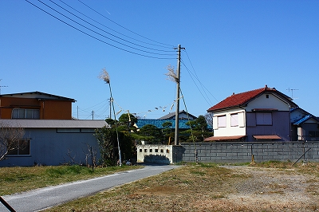
牛込というのは東京湾に面した場所で、アクアラインがすぐ近くを走っている。またすぐ北には巨大な京葉工業地域が迫っており、行ってみると長閑な田舎町だが
現代社会と伝統社会がせめぎあっている不思議な場所である。
海からの猛烈な寒風が吹きすさぶ中、支柱である竹が左右に大きく揺れていた。
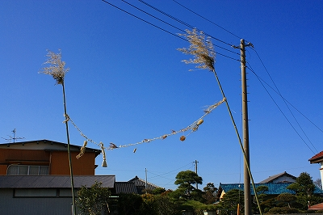 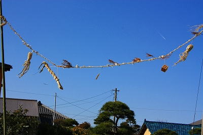
近付いてみると縄に幾つかのグッズが吊り下げられている。
左から藁で出来た
タコ、エビ（だと思う）そして
絵馬のような形状の板、木製の
サイコロ、で
タコ。
…まるでナゾナゾを出されているみたい。これらに何の意味があるの？手の込んだ暗号か？
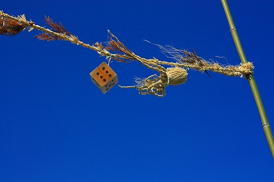 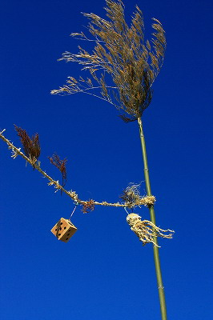
まあ、漁業が盛ん、という御土地柄なのでエビは判らんでもないが…縁起物だし。タコって？
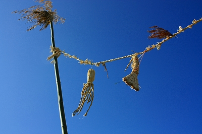
サイコロに関しては思い当たる節がある。以前、他の地域の道切りに関する論文を読んだ際、やはり道切りにサイコロを下げるところがあって、それは
博打好きが多くてろくなムラじゃないですよ、という
無茶苦茶自らを卑下した防犯対策をほどこしているらしい。
尚、わらじを吊り下げる地域も多いのだが、そのわらじも下手に編まなければならないという。これも
能力が低い人だらけのムラです、という
セルフネガティヴキャンペーンをはっているのだという。
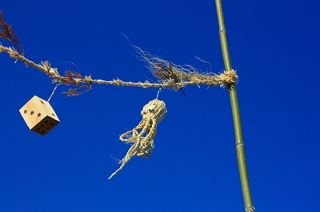
わらじのハナシが出たついでに付け加えると、道切りの奉納物で大きなわらじを掲げるところも多い。
しかもわざと作りかけのわらじを掲げたりもするのだ。これは「このムラにはとても大きな者がいて、あまりにも大きすぎてわらじが作れませんでした」というアピールだそうだ。これはどちらかというと巨大な藁人形や巨大な男根を設置するケースに心情的には似ているのでは。
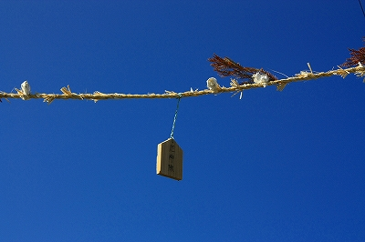
絵馬を見ると「厄神除」と書かれてある。裏には「牛込三組」。
牛込の中でも地区ごとに道切りを行っているようだ。
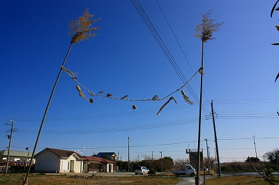
猛烈な突風にあおられて開運グッズさんたちも上下左右に
てんやわんやの大騒ぎ。
ホント寒かったです…
一方こちらは
牛込の別の地区の道切り。
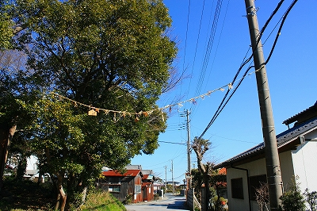
こちらは鎮守の森の脇の辻にあった。竹の支柱ではなく、片方は鎮守の木、そしてもう片方は電信柱に縛り付けられていた。
先程の牛込三組に比べると森の脇なので吹きさらし感はあまりないがそれでも綱が風に舞っていた。
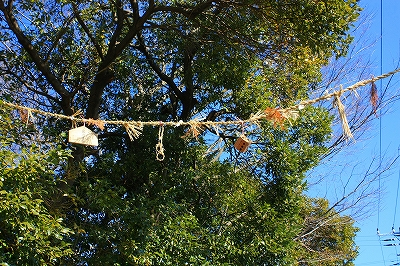
ここでは藁製のエビやタコは確認出来なかった。
先程の牛込三組の奉納物と共通するのは
サイコロと
絵馬状の板、そして縄に等間隔に挟まれた
杉の葉。
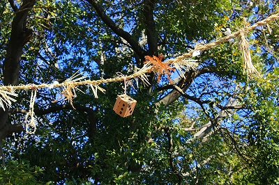
逆に牛込三組では見られず、ここにあったものは
手錠のような輪。
一方に「厄神除」、もう一方に「家内安全
牛込一番組」とあった。
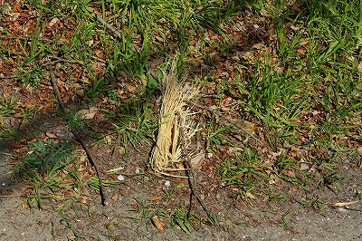 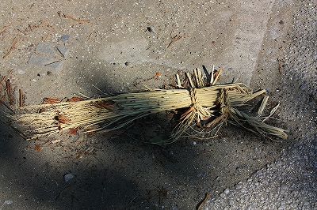
下を見たらエビ？の残骸？のようなもの？が２つほど落ちていた。
最後はアクアラインの金田ICのすぐ近く、中島。
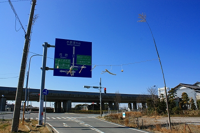
目の前がアクアライン。
こんな幹線道路中の幹線道路に面して道切りがしてあるとは驚いた。
現代社会と伝統社会が交錯するこの地域独特のアンビバレントな光景だ。
現代文明の象徴でもある高速道路に対してケンカを売っているかのような、
えもいえぬ迫力がある。
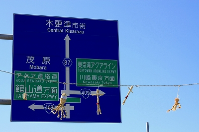 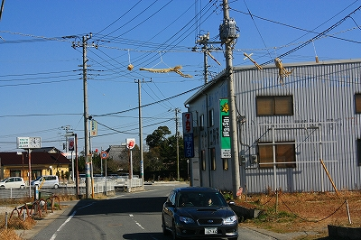
支柱は片方だけ竹を建て、片方は電信柱を使用している。
東京湾からの強風ですべての雲が取り払われた青い空に浮かぶ藁製の奉納物。
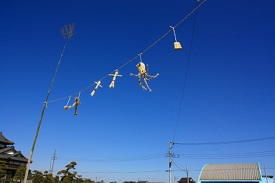
左から
サイコロ、
エビ、
人形が２体、
タコ、そして
絵馬の６個。
ちなみにここの絵馬には「家内安全」「天下泰平」と書かれていた。絵馬というよりは
将棋の駒のような形だった。
先の牛込の２件には杉の葉や縄の継ぎ手がない、シンプルな縄であった。
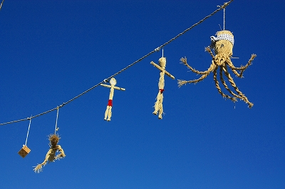
そのため吊るされている奉納物が妙に抽象化されていてオブジェっぽい。
そういう意味では一番印象的な道切りであった。
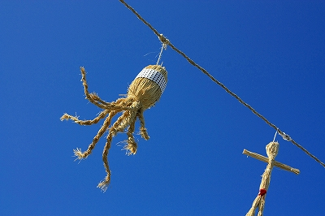 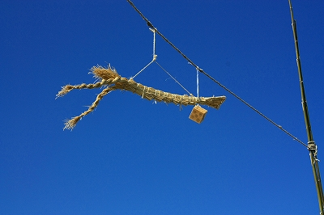
ここで着目したいのは二体の藁人形である。
秋田の人形道祖神などでも男女一対の人形を設置する場合があるが、ここの道切りも
男女一対の人形ということなのだろうか。
よ〜く見ると片方はフンドシ、片方は腰巻のように見える。また顔の部分に紙が貼られていて顔が描かれているようだが良く見えなかった。
ここから10キロ程東に位置する袖ヶ浦市阿部地区では
鹿島人形と呼ばれる２体の藁人形を神社の前に奉納する習俗がある。
この鹿島人形もここの二体の藁人形も東日本全域に分布する人形道祖神の影響なのではないか、と私は想像するのだがどうなんでしょ？
青い空にくっきり浮かんだ道切りオールスターズの皆さん。
一際、赤いパンツが目立ってますね〜。
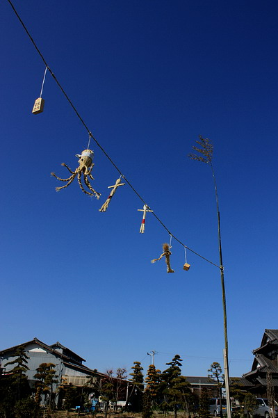
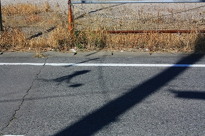
道にはしっかりタコの影が刻まれていた。
ひょっとしたらアクアラインで東京神奈川方面からやってくる観光客を迎え撃っているのかもしれないですね。